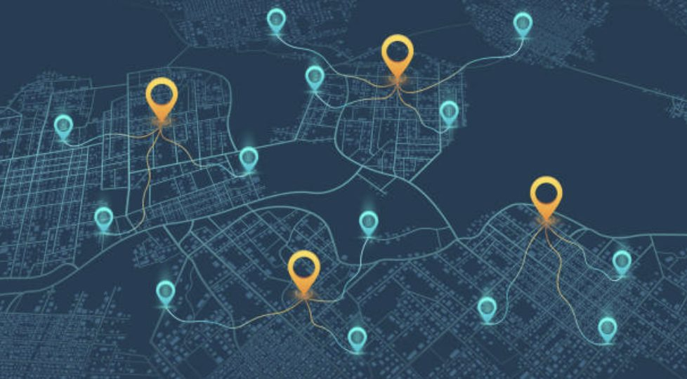
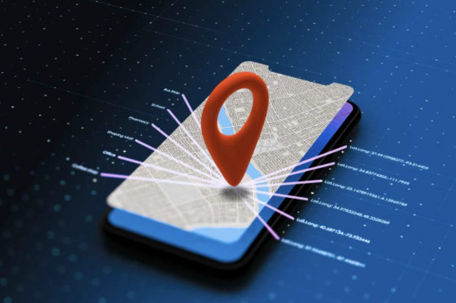
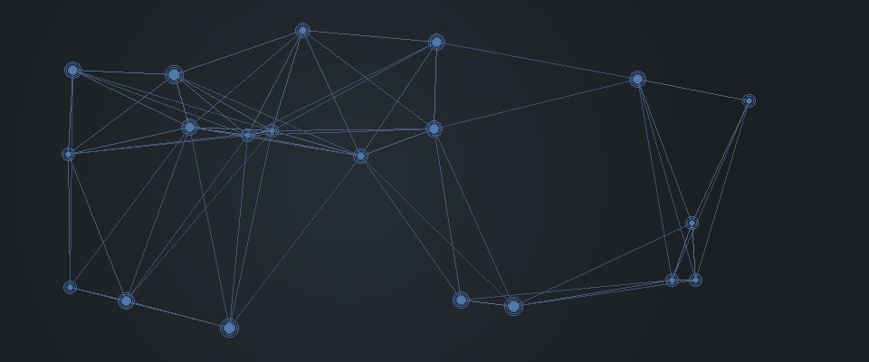

Tjenester

Open-Respons AS utvikler en digital beredskapsløsning som kobler virksomheter med akutt behov for bistand direkte til nærmeste tilgjengelige vekter, uavhengig av tilknytning. Dette gir kortere responstid, bedre dekning og en mer kostnadseffektiv beredskapsmodell.
Selskapsuavhengig respons
Når en alarm utløses, identifiserer systemet automatisk nærmeste tilgjengelige ressurs basert på lokasjon og tilgjengelighet. Dermed unngås flaskehalser der kun én leverandørs ressurser kan respondere.
GPS-basert utkalling
Tilkoblede vektere deler posisjon i sanntid. Ved alarm beregner plattformen hvem som kan være raskest på stedet, og dirigerer oppdraget direkte til den aktuelle ressursen med nødvendig informasjon.
Alarmknapp for kunder
Butikker, bedrifter, bygg og arrangementer får en enkel alarmknapp som utløser tilkalling med ett trykk. Plattformen håndterer varsling, oppdragsfordeling og dokumentasjon, slik at hjelpen settes i gang umiddelbart.
Bedre dekning og ressursutnyttelse
Ved å utnytte tilgjengelige ressurser på tvers av aktører oppnås bedre dekning over større områder, færre hull i beredskapen og mer effektiv bruk av eksisterende kapasitet.
Backup-funksjon
Dersom en situasjon eskalerer, kan vekteren be om backup direkte i systemet. En forsterkningsforespørsel sendes da til nærmeste tilgjengelige kollega, slik at støtte kan ankomme raskt og risiko reduseres.
Bruk

1. Alarm utløses
En ansatt i butikk, resepsjon eller ved et arrangement utløser alarmen når det oppstår behov for bistand. Tilkallingen sendes umiddelbart til Open-Respons-plattformen.
2. Nærmeste vekter identifiseres
Plattformen benytter lokasjonsdata fra tilkoblede vektere på tvers av vaktselskaper og vurderer samtidig tilgjengelighet. Systemet identifiserer deretter den ressursen som forventes å være raskest på stedet.
3. Oppdraget dirigeres
Den valgte vekteren mottar varsel med nødvendige detaljer og nøyaktig lokasjon, og kan navigere direkte til hendelsen. Oppdraget loggføres automatisk for sporbarhet og dokumentasjon.
4. Raskere respons
Siden løsningen ikke er begrenset til én leverandørs ressurser, reduseres responstiden betydelig. Nærmeste tilgjengelige hjelp kan rykke ut, uavhengig av hvilket selskap vekteren tilhører.
5. Transparent og rettferdig oppgjør
Etter utrykning leveres standardisert rapportering. Basert på dokumentert innsats håndterer plattformen oppgjør og fordeler midler til korrekt vaktselskap. Dette sikrer en transparent, rettferdig og etterprøvbar økonomisk modell for alle parter.
Om oss

Open-Respons AS er en norsk oppstartsbedrift som utvikler en ny digital infrastruktur for akutt sikkerhetsberedskap. Vi utfordrer dagens modell, der virksomheter ofte er bundet til én leverandør, ved å legge til rette for at den nærmeste tilgjengelige vekteren kan rykke ut uavhengig av hvilket selskap kunden vanligvis benytter. Målet er kortere responstid, bedre ressursutnyttelse og økt trygghet for ansatte og kunder.
Teamet vårt kombinerer bransjeerfaring fra sikkerhet med teknologikompetanse og forretningsutvikling. Vi bygger en plattform som muliggjør samhandling mellom vekterselskaper på tvers av aktører, med standardisert arbeidsflyt, rapportering og kvalitet. Slik kan sikkerhetsbransjen levere mer effektiv og robust beredskap sammen.
Kontakt